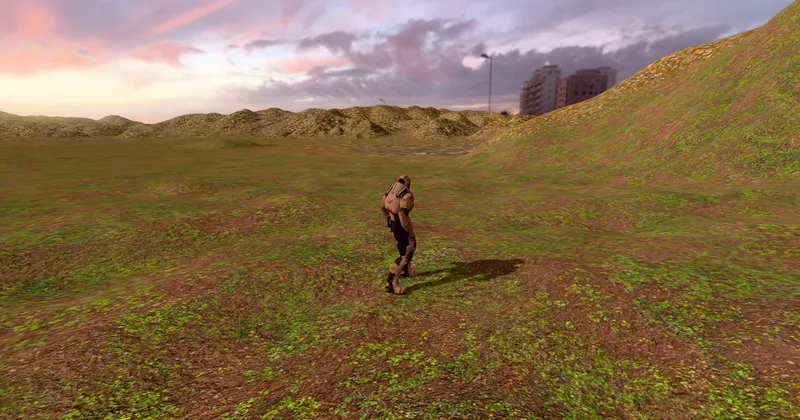

3D World & Simulation Landscape
Tile Streaming - RedGPU WebGPU Example
Asynchronously streams high-res heightmap tiles across a 16×16 terrain.
16×16 분할 지형에서 카메라 위치에 맞춰 고해상도 타일을 비동기 스트리밍합니다.

3D World & Simulation Landscape
Asynchronously streams high-res heightmap tiles across a 16×16 terrain.
16×16 분할 지형에서 카메라 위치에 맞춰 고해상도 타일을 비동기 스트리밍합니다.
